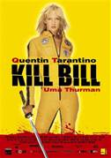
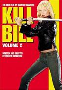

Micro Movie Reviews
Micro Movie Reviews
ACTION MOVIES

Kill Bill Vol. 1 (2003) | Rated: R
The Deadly Viper Assassination Squad consists of five deadly killers, led by Bill (David Carradine). The other members are O'Ren-Ishii (Lucy Liu) aka Cottonmouth, Elle Driver (Daryl Hannah) aka California Mountain Snake, Vernita Green (Vivica A. Fox) aka Cooperhead, and Budd (Michael Madsen) aka Sidewinder.
The Bride (Uma Thurman) is the movie's central character. She has decided to retire from the Assassination Squad and get married. However, Bill and her former colleagues decides to show up at her wedding and proceeds to kill everyone at the wedding and leave the Bride clinging to life.
The Bride wakes from a coma after several years and remembers the wedding ordeal. She takes about two months to rehabilitate and establish a plan for revenge. Then, the Bride carries out her revenge plans on each of the assassin squad members. She takes "no prisoners" and slowly regains her life while going through the process.
Stars: Uma Thurman, David Carradine, Lucy Liu, Vivica A. Fox, Daryl Hannah
Writers: Quentin Tarantino (screenplay) and Uma Thurman (screenplay credit)
Director: Quentin Tarantino
Genre: Action Movie

Kill Bill Vol. 2 (2004) | Rated: R
The Bride continues on her journey for revenge. There were initally five Deadly Viper Assassination Squad members on her list. She has been hard at work, and now there are only three on her list. The Bride is out to even the score by taking out Elle Driver, Budd, and Bill. These three know the Bride is coming, they have learned that their two conrades O'Ren-Ishii (Lucy Liu) and Vernita Green (Vivica A. Fox) have been dealt with. If the final three believe that the Bride won't catch up with them, they are in for a rude awakening.
As with all plans, the Bride's revenge plan has run into a complication. Her daughter is still alive. The daugher who was taken from her when she was still pregnant. What effect this will have on the Bride's quest for retribution is unclear. However, the question is will the Bride succeed with her ultimate goal - to put the Deadly Viper Assassination Squad out of business.
Stars: Uma Thurman, David Carradine, Lucy Liu, Vivica A. Fox, Daryl Hannah
Writers: Quentin Tarantino (screenplay) and Uma Thurman (screenplay credit)
Director: Quentin Tarantino
Genre: Action Movie